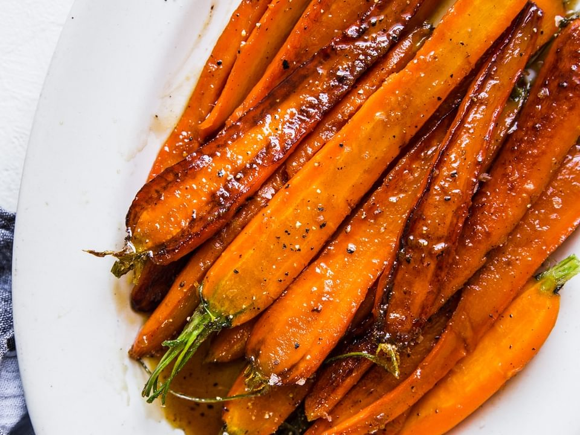

Glazed Carrots

Description
This is Glazed Carrots recipe. Enjoy
Ingredients
- 2 pounds carrots, peeled and cut into sticks
- ¼ cup butter
- ¼ cup packed brown sugar
- ¼ teaspoon salt
- ⅛ teaspoon ground white pepper
Step by step :
- Place carrots into a large saucepan; pour in enough water to reach depth of 1 inch and bring to a boil. Reduce heat to low, cover, and simmer carrots until tender, 8 to 10 minutes. Drain and transfer to a bowl.
- Melt butter in the same saucepan over low heat. Stir in brown sugar, salt, and white pepper until dissolved. Add carrots to the saucepan and toss until coated in the brown sugar mixture. Cook and stir until carrots are heated through and fully coated with glaze, 1 to 3 more minutes.